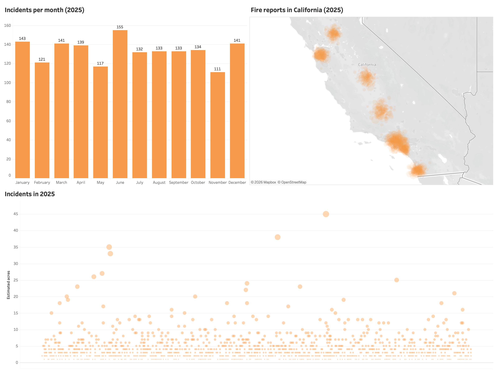

California fires
Once again, the instructions are not as detailed as module 9. You may need to collaborate with your peers today.
Start by downloading the California fires 2025.zip file from Canvas.
I suggest you don’t leave the lab before you finish it.
If you need any help, please let me know.
Map
-
Create a new document in Tableau Public and upload the
California fires 2025.csvfile. -
On Sheet 1, make the Longitude the x‑axis and the Latitude your y‑axis.
-
You want the data visualization as Circle.
-
Drag the Incident ID to Detail.
-
Make each dot orange, with 10% opacity, and with Size relative to the Estimated acres.
-
In the tooltip, include: Incident ID, County, Incident type, Reported date, and Estimated acres.
-
Name the graph Fire reports in California (2025).
Bar chart
-
Make an orange vertical bar chart showing the count of incidents reported each month of 2025.
-
Name the graph Incidents per month (2025).
Scatterplot
-
Make a scatterplot showing all the report in 2025 and the estimated acres for each incident.
-
You want the Estimated acres represented in both the y‑axis and the size of each circle.
-
Opacity of 40% for each circle seems to work well.
-
Name the graph Incidents in 2025.
Dashboard
-
Create a New Dashboard and change its size to 1600 × 1200px.
-
Add all three sheets to the dashboard.
-
Make sure they’re a positioned as the image below.

Visualize and share your dashboard
-
Click on the × next to your name on the top‑right of the page.
-
Click the Share button.
-
Click on the Copy Link button.
-
Paste the link on a new tab of your browser.
-
Copy the new URL from the address bar on the browser. (That’s the URL you need to submit on Canvas.)
Submission
Submit the second URL to Canvas.